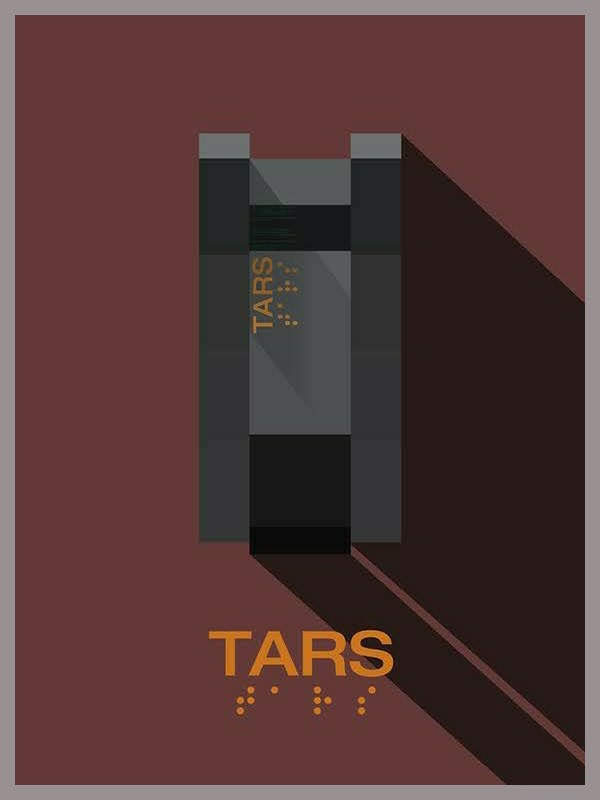

ARRIVAL
Twelve extraterrestrial spacecraft hover over disparate locations around the Earth. Affected nations send military and scientific experts to monitor and study the ships; in the United States, U.S. Army officer, Colonel G.T. Weber, recruits Banks and physicist Ian Donnelly to study the craft that landed in Montana. On board, Banks and Donnelly make contact with two seven-limbed aliens, whom they call "heptapods"; Donnelly nicknames them Abbott and Costello.
Banks and Donnelly begin researching their written language of complicated circular symbols, sharing results with the other nations. As Banks studies the language, she starts to have flashback-like visions of a child, who seems to be her daughter. When Banks is able to establish sufficient shared vocabulary to ask why the aliens have come, they answer: "Offer weapon". However, China translates this as "Use weapon", prompting them to break off communications, and other nations follow. Banks argues that the symbol interpreted as "weapon" might mean "tool", and that China's translation likely results from the competitive nature of their interaction with the aliens centred on Mahjong.
Rogue soldiers plant a bomb in the Montana craft. Unaware, Banks and Donnelly re-enter the alien vessel, and the aliens give them an extremely complex message. Just before the bomb explodes, one of the aliens ejects Donnelly and Banks, knocking them unconscious. When they reawaken, the military is preparing to evacuate in case of retaliation, and the craft has moved out of reach.
Donnelly discovers that the symbol for time is present throughout the message, and that the writing occupies exactly one-twelfth of the 3D space in which it is projected. Banks suggests that the full message is split among the twelve craft, and the aliens want all the nations to share what they learn.
In the present, Banks steals CIA-agent Halpern's satellite phone, a rarity when phones have been confiscated on the base, and calls Shang's number to recite the words. The Chinese announce that they are standing down and release their twelfth of the message. The other countries follow suit, and the twelve craft depart.
During the evacuation of the camp, Donnelly expresses his love for Banks. They talk about life choices and whether he would change them if he could see the future. Banks knows that she will agree to have a child with him despite knowing their fate: that Hannah will die, and Donnelly will leave them after she reveals that she knew this.
INTERVIEW
Villeneuve, whose films “Prisoners” (2013) and “Sicario” (2015) have made him a hot commodity in Hollywood, has wanted to direct science-fiction for quite some time, but was waiting for the right material. “The idea that the main tension of the story will be communication really appealed to me,” he divulges. “I felt that was so relevant with what’s happening today.” While he took great pains to make sure that Dr. Banks’s approach to communication “would make sense for a linguist,” he admits that “for me, the movie’s not necessarily about language, but about the limits of language, the idea that when you are beyond words, the only thing you can rely on is intuition.” It’s a quality he feels “we are not using enough today.”
INTERSTELLAR

In the mid-21st century, crop blights and dust storms threaten humanity's survival. Corn is the last viable crop. The world has also evolved into a post-truth society where younger generations are taught ideas such as the Apollo moon missions were faked. Widowed engineer and former NASA pilot Joseph Cooper is now a farmer. Living with him are his father-in-law, Donald; his 15-year-old son, Tom; and 10-year-old daughter, Murphy. After a dust storm, strange patterns made from dust inexplicably appear on Murphy's bedroom floor, she attributes the anomaly to a ghost. Cooper eventually deduces the patterns were caused by gravity variations and are a binary code for geographic coordinates. Cooper follows the coordinates to a secret NASA facility headed by Professor John Brand, Cooper's former supervisor. Professor Brand says gravitational anomalies have happened elsewhere. 48 years earlier, unknown beings positioned a wormhole near Saturn, opening a path to a distant galaxy with twelve potentially habitable worlds located near a black hole named Gargantua. Twelve volunteers traveled through the wormhole to individually survey the planets. Astronauts Miller, Edmunds, and Mann reported positive results. Based on their data, Professor Brand conceived two plans to ensure humanity's survival. Plan A involves developing a gravitational propulsion theory to propel a mass exodus, while Plan B involves launching the Endurance spacecraft carrying 5,000 frozen human embryos to colonize a habitable planet.
Cooper is recruited to pilot the Endurance. The crew includes scientists Dr. Amelia Brand (Professor Brand's daughter), Dr. Romilly, Dr. Doyle, and robots TARS and CASE. Before leaving, Cooper gives a distraught Murphy his wristwatch to compare their relative time for when he returns. After traversing the wormhole, Romilly studies the black hole while Cooper, Doyle, and Brand descend in a landing craft to investigate Miller's planet, an ocean world. After finding wreckage from Miller's ship, a gigantic tidal wave kills Doyle and delays the lander's departure. Due to the proximity of the black hole, time is severely dilated. As a result, 23 years have elapsed for Romilly on Endurance by the time Cooper and Brand return. With insufficient fuel to reach Edmunds' planet, they use a slingshot maneuver so close to Gargantua that time dilation adds another 51 years. In the process, Cooper and TARS jettison themselves to shed weight and ensure Endurance reaches Edmunds' planet. Slipping through the event horizon of Gargantua, they eject from their respective craft and find themselves inside a massive tesseract, possibly constructed by future humans.
INTERVIEW
Scott Foundas, chief film critic at Variety, said that Interstellar is "as visually and conceptually audacious as anything Nolan has yet done" and considered the film "more personal" than Nolan's previous films. Claudia Puig of USA Today praised the visual spectacle and powerful themes, while criticizing the "dull" dialogue and "tedious patches inside the space vessel." David Stratton of At the Movies rated the film four-and-a-half stars out of five, commending its ambition, effects, and 70mm IMAX presentation, though criticizing the sound for "being so loud" as to make some of the dialogue "inaudible." Conversely, co-host Margaret Pomeranz rated the film three out of five, as she felt the human drama got lost among the film's scientific concepts. Henry Barnes of The Guardian scored the film three out of five stars, calling it "a glorious spectacle, but a slight drama, with few characters and too-rare flashes of humour."